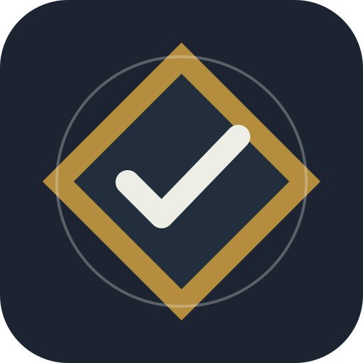

Support / Soporte / Suporte
Knowledge-Driven DevelopmentEnglish
For help with KDD, report a defect, ask a documentation question, or disclose a security concern, contact the maintainer.
Do not send credentials, private prompts, customer data, or sensitive project files. Share the smallest reproducible example instead.
Español
Para pedir ayuda con KDD, reportar un defecto, consultar documentación o comunicar una preocupación de seguridad, contacta al responsable.
Enviar correo a soporte de KDD
No envíes credenciales, prompts privados, datos de clientes ni archivos sensibles. Comparte el ejemplo reproducible más pequeño posible.
Português
Para obter ajuda com KDD, relatar um defeito, perguntar sobre a documentação ou comunicar uma preocupação de segurança, entre em contato com o responsável.
Enviar e-mail para o suporte do KDD
Não envie credenciais, prompts privados, dados de clientes ou arquivos sensíveis. Compartilhe o menor exemplo reproduzível possível.